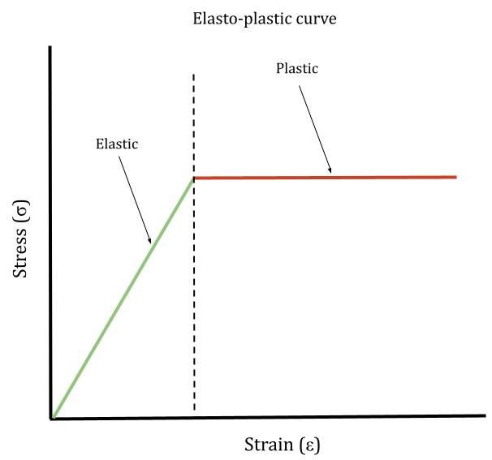

To accurately represent the Oso Landlside, one of our tasks was to digitize the Oso slope profile and recreate the geometry in Optum G2.

The Factor of Safety (FS) is the ratio between the resisting force and the driving force. This means that when the force resisting downward movement of the slope is less than the driving force, the slope is considered unstable, giving an FS value of less than 1. A FS of more than 1 indicates slope stability. However, to account for variations in the assumptions made in the analysis, engineers aim for a factor of safety of 1.2 or greater.

Pore pressure is the pressure of the groundwater within soil or rock, in gaps between particles. Without groundwater, the particles are much closer together, resulting in a larger friction angle. When groundwater is introduced, the particles are much more spaced out, resulting in a smaller friction angle, making it much easier for one particle to roll over the particle downslope from itself.
The Mohr-Coulomb model describes the strength of the material and how it responds to stresses. It assumes an elastoplastic behavior which can be represented by a graph.
The first analysis run (if groundwater is in the system) is seepage, which characterizes the hydraulic behavior of the soil. This analysis is run first because we want to understand stresses due to water before doing the strength reduction analysis.
For the strength reduction analysis, the program takes the ratio that is given by the factor of safety, and reduces the associated strength parameters, cohesion and friction angle. It reduces these factors until there is permanent deformation in the slope.